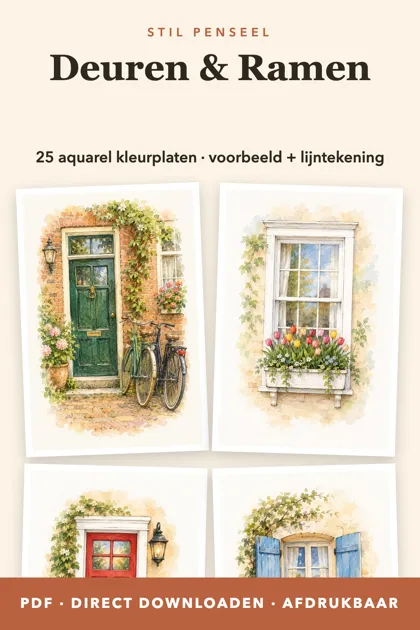
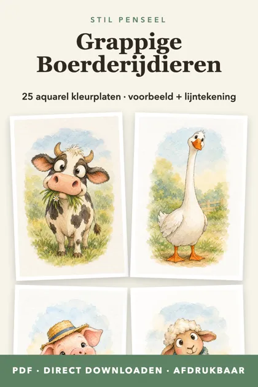
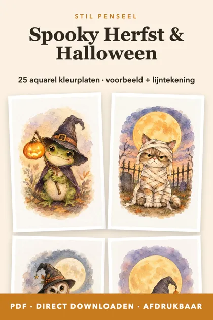
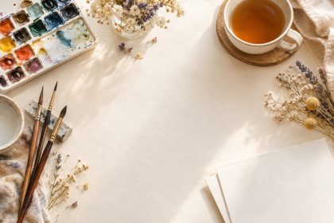

Download de PDF’s op je telefoon of computer en print ze zo vaak je wilt. Elk ontwerp heeft een voorbeeldschilderij en een lijntekening.




Start de download niet? Tik op ‘Openen’ en bewaar het bestand vanuit je browser.